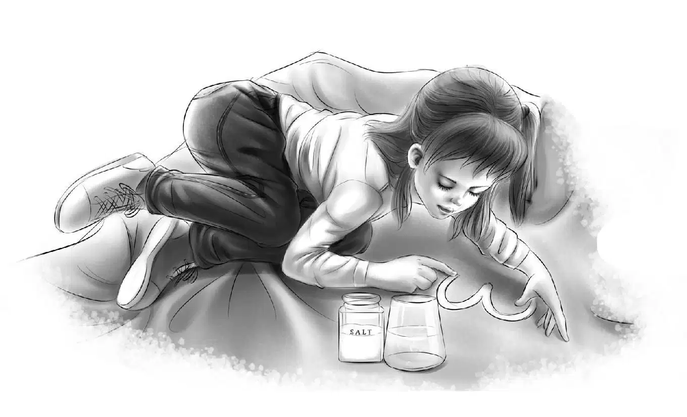
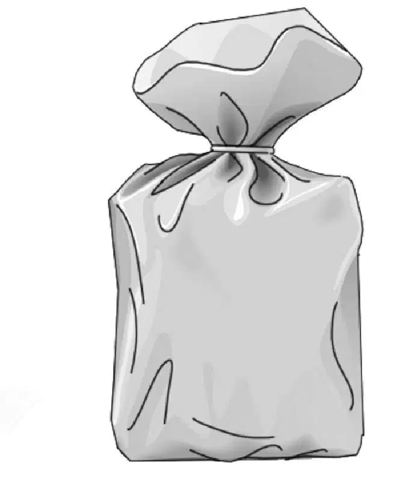
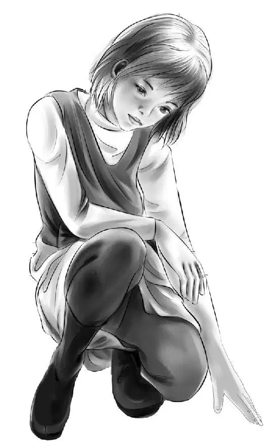
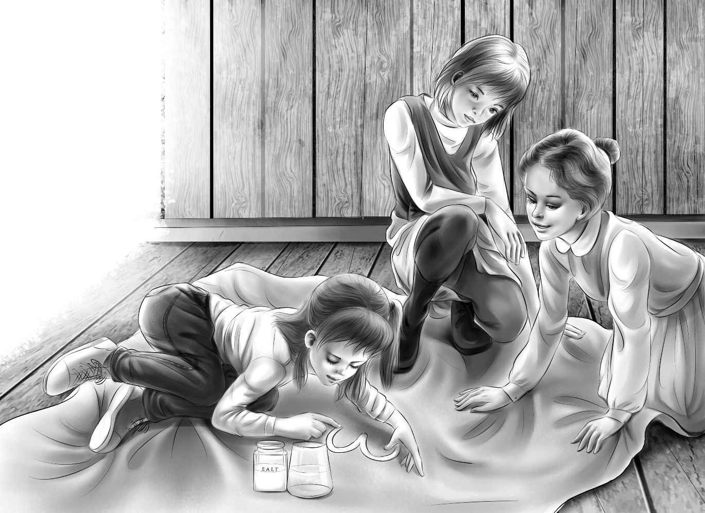
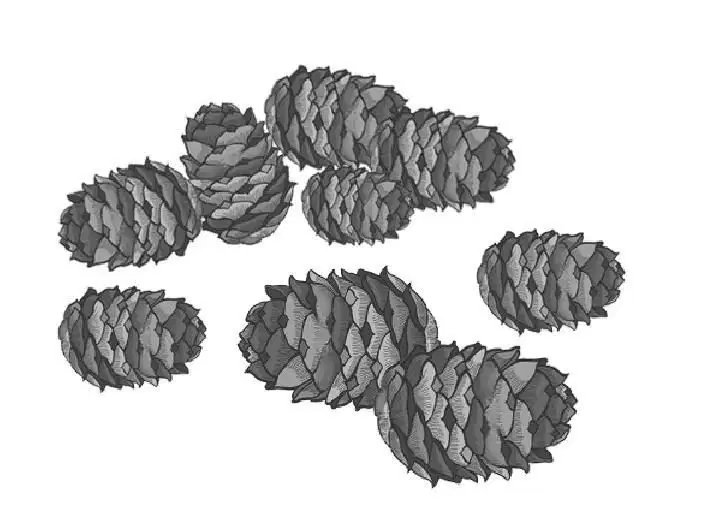

To the Rescue

奥登兄妹把门打开了一条小缝，只见两头鹿虽然仍陷在雪地中，却已经挣扎着站立了起来。
“它们不想让咱们帮忙。”班尼说。
“是不需要帮，”亨利说，“它们已经站起来了。”
两头鹿抖了抖身上的雪，不过，又有更多的雪花落在了身上。它们慢慢地朝小木屋的方向走过来，抽动了一下鼻子，褐色的眼睛温柔地望着小屋的木门。
随后，沿着男孩们铲出的小路，鹿儿们又循到了空地上。孩子们悄悄来到窗前，向外望去，这两只温柔的小家伙一定是累坏了，此时它们正趴在地上，相互舔舐着。
“听，有动静，好像是有人在叫唤，我不是在做梦吧？”
班尼没有做梦，他听到的声音的确是真实的，他打开门，只看了一眼，便叫起来：“亨利，快穿上外套，把我的也拿来！”说完，便跳下台阶，跑到小路上。
亨利从挂钩上取下两件外套，冲进风雪中，奋力追去。女孩们望向小路，只见雪地上趴着一个貌似人形的物体，而不远处，一个男人肩头扛着孩子，背靠在树上。
孩子们立刻把鹿儿的事情抛在了一边。
“是尼尔森一家！”杰西叫道，“哦，天哪，恐怕是芭芭拉摔倒在雪地里了。咱俩又不能出去帮忙，只能在这儿干等了。”
“我敢肯定，尼尔森一家准是过来救咱们的。”维莉说。
“我也这样想。”杰西说，“看！亨利正扶着芭芭拉走过来呢！我这就去拿个睡袋，放在壁炉前。”
“我去拿吧。”说完，维莉便冲向里屋，杰西赶紧将房门敞开，用手撑住。
只听芭芭拉正虚弱地对亨利说：“哦，亨利，抱歉害得你们跑一趟，我真没用，本来以为能挺住的，没想到路这么难走。”
“可别这么说！”亨利安慰道，“您能亲自过来，可见您是多么勇敢，多么善良！”他扶着尼尔森太太躺在睡袋上，杰西赶紧又垫了一个睡袋给她做枕头。
“我可以坐着，我可以的。”芭芭拉说道。
“先躺着别动，芭芭拉。”杰西俯身蹲在她身边，建议道，“过一会儿再坐到沙发上去吧！”
望望走过来，乖乖蹲在地上，一动不动。
“尼尔森先生应该坐下才是，他一路都扛着帕奇呢。”班尼说着，推过一把椅子，尼尔森先生便沉沉地坐了下去，身子无力地往后一靠，闭上了眼睛。
一向活泼的帕奇也累了，班尼让他钻进自己的睡袋，并拉过一把椅子让帕奇靠着。
“那么，那么……你们是过来帮忙的？”班尼说道。
尼尔森先生点了点头：“本来是这样打算的。看到雪一直下个不停，我们就忍不住担心，不知道你们究竟回到木屋没有。”
亨利附和道：“差一点儿就回不来啦。”
“今天一大早我就想过来看看你们，可是芭芭拉也要跟来——她怕我迷路，所以只好把帕奇也带上了。”
“真是太谢谢你们啦！”杰西的声音都有些颤抖了，“下这么大的雪，你们很容易迷路的。”
“也就摔了两跤而已，好在都爬起来了。”托马斯·尼尔森轻描淡写道。
杰西突然想到了什么。“你们饿了吧？”她问道。
“可不是么！”帕奇叫了起来，“我都几百万年没吃东西了！”
亨利哈哈笑了起来：“这像是你说的话呢，小班班！”
“唉！”托马斯·尼尔森叹了一口气，“可惜路上耽搁得太久了，出门时本来还给你们带了一大袋食物的，后来没辙，只有扔在雪地里了。”
“维莉，”杰西说道，“大家可以吃炖肉啦！鸡肉已经熟透了，热乎乎，香喷喷的！你去把桌椅摆好，我再找三个盘子盛鸡肉。”
“炖鸡肉？”帕奇问道，“我还从来没听说过呢！”
“很好吃的。”班尼说。
“你说好吃，那肯定错不了。”帕奇看着班尼。
大伙儿开始享用美味的炖鸡大餐了，尼尔森先生不禁感慨道：“谢天谢地，咱们终于到地方啦！”说完，他深深舒了口气。
趁着大家大快朵颐的工夫，维莉和杰西开始制作冰激凌了，她们将松软的白雪混在牛奶里，加入砂糖和葡萄干果冻，做出来的冰激凌颜色粉嘟嘟的，好看极了。
“要是爷爷看到这个冰激凌，一定会笑起来的。”班尼说。接着，他把爷爷通过电台传消息的事情告诉了尼尔森先生。
最后他补充道：“只是爷爷没料到你们会来。”
话音刚落，大家便听到屋外响起了一阵奇怪的嗡嗡声。
“这是什么声音？”杰西不禁问道，然后侧耳倾听。
“我听出来了，是直升机的声音！”班尼叫了起来，“我的外套呢？”眨眼间，班尼便冲向门外，他边跑边穿外套，亨利则紧紧地跟在他身后。
声音越来越大。直升机盘旋着，似乎悬浮在了木屋上方。
“这里没法降落啊！”班尼说，“怎么办？”
“往后退，班尼！”亨利叫道，“飞行员正往外扔东西呢。”
只听“嘭”的一声，有东西落在了空地上——那儿刚好是班尼和亨利清理过的地方。

“是稻草！”班尼惊呼道，“牛在雪地里迷路时，救生机就会给它们空投稻草。可是，我们又不吃稻草……爷爷怎么知道这儿有两头鹿？！”
恰好此时尼尔森先生也来到屋外，他解释道：“班尼，这是干草包，是专门用来包裹东西的，外面那层稻草能起到缓冲和保护作用。还好你们把这儿的雪铲掉了，这样飞行员就能确定，扔下的包裹你们能接到。”
直升机缓缓下降，飞行员挥了挥手臂，但噪音太大，孩子们一句话也没听到。飞机再次盘旋起来，突然，一块黑板从舱门伸了出来，只见上面写着：
无法降落
包裹里有纸条
两小时后返回
两个男孩用力点了点头，挥了挥手。
直升机飞走了。
亨利和班尼一起将包裹沿着小路拖过来，屋里的人透过窗户张望着，看到他们将包裹拖进小屋，大家便围拢过来，帮着把包装用的稻草扯掉。
“干草别离火太近啦！”杰西提醒道，“暴风暴雪的，可不能再来一次火灾。”
随即，他们看到了包裹里的东西。
“有盒装牛奶，”亨利说道，“还有蜜桃罐头。”
“还有好几条面包呢！”杰西说。
“还有一袋砂糖和好多汉堡肉，就这么多啦。”班尼说，“幸亏砂糖用稻草包了起来，要是袋子破了，糖准会撒得到处都是。”
“纸条在哪儿？”亨利问道，“这才是最重要的。”
“在这儿呢！”班尼说道，“就是这张用塑料袋裹住的纸条。”
亨利大声读了起来：
州警和交通部门会按计划接你们回家。把你们需要的东西用大字写在显眼的底板上，搁到雪地里。飞行员回头会将你们的必需品带过来，空投给你们。记得告诉我你们的现况。
——爷爷
“给爷爷的留言到底写在哪里好呢？”杰西问道。
“哦，老天。”维莉说，“咱们没有足够大的底板，也没有油漆和墨水。”
“大家到处找找吧。”说完，班尼坐下来，四下打量着房间里的每件物品。杰西去到卧室，并没有发现足够大的东西——墙上也没有大挂历。
尼尔森一家也开始冥思苦想起来。
“底板不仅要足够大，”维莉说道，“而且颜色要么够深，要么够浅。”
“那留言用什么颜料写？”帕奇问道。
“先把眼前的问题解决再说，帕奇。”亨利说道，“我们必须找到一块大卡片之类的东西。”
班尼将整个客厅都环视了一遍，目光又回到了窗子上。
“看！”他指了指暗绿色的遮光帘。
“噢，班尼！”维莉欢呼起来，“就是它了——整间屋子里，就属它最大啦。”
亨利登上窗椅，取下帘子，放在地板上，铺展开来。
“你站到这头来，帕奇。”亨利说道。班尼早已站到另一头去了，这帘子确实是个最完美不过的大底板。
“现在来解决第二个问题：咱们得用白色的颜料来写留言，可是没有粉笔。”亨利说，“想到好点子的有奖！”
“我想得奖。”帕奇说。
“那就快动脑筋啊，帕奇。”他妈妈说道。
最后，还是维莉想出了办法：“我不确定这方法可不可行，要不先写个字试试？”
“留言准备写什么内容？”芭芭拉问道，“你们有什么特别需要的吗？”
“我们需要三个睡袋——给你们用的。”杰西说，“要是天黑前收不到它们的话，你们肯定会被冻僵的。现在，维莉，快说说你的好主意吧！”

“我以前试过这个法子，只是字写得没这么大罢了。”维莉说，“首先，用水把字写上去，再撒上一层厚厚的盐，等字干了以后，再把面上的浮盐抖落下来。”
“这办法肯定行！”班尼说，“咱们先试试吧。维莉，你写字和画画都是最棒的，先写个３好了，要这么大的。”他边说边比画了一个四英寸大小的３。
“幸亏咱们有水。”说话间，班尼已经端来一整杯水，杰西则把盐盒放到了地上。
维莉趴在地上，将手指蘸蘸水，写下了数字3，随即撒上大量的盐。“先让它晾一会儿。”她说，“接下来要写的是睡袋的‘睡’字。”大家全都聚精会神地注视着维莉。
写完后，维莉吩咐道：“现在可以把‘3’字上的浮盐抖下来啦！”
亨利抓起帘子一角，将盐抖落在壁炉里，顿时，一个漂亮的白色“3”出现在遮光帘上。
“好极了！”班尼欢呼起来，“这办法真管用，我就知道能成！”
“3个睡袋”几个字写完后，杰西建议道：“咱们还应该告诉爷爷，为什么需要这些睡袋。我想只用写尼尔森几个字就够了，爷爷一看就知道，尼尔森一家是来帮咱们的。”
维莉早已动手写下了“尼尔森3人”：“我还要写‘很好’两个字，这样爷爷就知道咱们一切都好。”
“还要写‘多谢您的稻草’。”班尼说，“爷爷会觉得好笑的。”
“这个自然。”亨利哈哈笑了起来，“爷爷一听就知道，这话是你说的——正是你的风格嘛，这会让爷爷开心点。”

留言写完了，亨利说：“咱们把它拿出去吧，飞行员有可能会提前到呢！”
“帘子的四个角说不定得用石头压住才行。”班尼一边说，一边穿起了外套。
“可这么大的雪，到哪里去找石头？”托马斯·尼尔森问道。
“就用砸核桃的石头啊！”杰西说道，“把四块都一起拿去，免得来回跑。”
此时，风势渐渐转弱，雪也停了。男孩们把大标牌铺在雪地上，遮光帘的四角被风吹得微微翘起，于是他们在每个角上压了一块平石。
“干得漂亮！”班尼赞道，他顿了顿，又说，“亨利，咱们把稻草拿到这儿来，喂给小鹿吃吧。”
“好！”亨利说，“等咱们回屋去，它们就能寻到这儿来了。”
这个主意让杰西很是欢喜，她将地板上的稻草清理干净，托马斯·尼尔森则帮着两个男孩把稻草抱出去，放在小鸟的食篮旁。
“听啊！”班尼再次转过身来。
“太好了！”亨利叫了起来，“直升机来了！幸亏咱们把标牌事先放好了，飞行员果然提前到了。”
屋里的人也听到了直升机的轰鸣声，立刻来到窗口张望。
只见直升机缓缓下落，在男孩们的头顶上盘旋。飞行员看了看地上的字，脸上露出了笑容。他拿出早已准备好的小黑板，上面写着：
一小时后返回
直升机再次飞走了。
男孩们卷起帘子，拿进屋里。班尼挂起外套，说道：“待会等咱们把盐巴刮掉，帘子就会又像新的一样了。”
“趁着等直升机的工夫，咱们把盘子洗了吧。”芭芭拉说。
“您就别管了，”杰西说，“只用在旁边看着就行啦。”
然而，芭芭拉已经把几个奇形怪状的空盘子摞了起来。
“还好咱们提前烧了热水，对吧，杰西？”维莉问道，“刚好用来洗盘子。”
补充了食物后，托马斯·尼尔森的精神也好多了，他问道：“亨利，你说的那些松鼠在哪儿？”
“到我的卧室来，您亲耳听听吧！”
班尼和帕奇也跟了进去，果然，从烟囱附近传出一阵阵抓挠和刮擦声。
托马斯·尼尔森说道：“依我看，屋顶上住的是一只松鼠妈妈和一只松鼠爸爸，还有一窝松鼠宝宝，最小的宝宝们估计是春天出生的，不过个头已经快赶上它们爸妈了。我估摸着，这家松鼠是计划在这里过冬的。”
亨利笑了起来：“可惜这计划被我们打乱了。我们才是不速之客，而不是它们——毕竟是它们先来的。”
“可不是么。”托马斯说，“它们准是被吓坏了，屋顶里很可能藏了好多松果和一个漂亮的小窝——天知道那小窝是用什么做的。”
“我好想看看那个窝！”班尼说，“反正棚顶是木头做的，你可以在上面打个洞嘛，亨利！”
“打洞倒是可以，可我不想。”亨利说，“我才不乐意让松鼠一家跑下来跟咱们同住呢。”
帕奇不禁问道：“爸爸，你说这些松鼠跑到下面来过吗？”
“我想应该没有。”托马斯·尼尔森四下里看了看，显得有些局促不安，“不过，可能有一些偶尔跑进过那间大屋子，我们曾看到一张貌似被松鼠啃过的报纸——只是没见过松鼠的踪影。”
“说不定松鼠被猎人赶了出去，报纸却忘了扔掉。”亨利说。

“我也这么想。”托马斯的脸色仍然有些焦虑，“松鼠对书籍和报纸的危害可不小呢。”
“这里也没什么东西可以被它们破坏的啊！”亨利话刚出口，就立刻联想起尼尔森家一直在寻找的东西——那件十分重要又神秘的东西。或许，那才是容易被松鼠毁掉的吧。可托马斯为什么对他们兄妹守口如瓶？要不是这样，他们完全可以带他去看那些密码，不过话到嘴边，亨利最后还是忍住了。
“幸亏咱们和松鼠之间隔着一层结实的楼板。”班尼说道，“屋顶的雪都有四英尺厚了，看起来像个结了霜的大蛋糕。”
“四英尺？”托马斯惊呼起来，“对，是差不多。对这样的小房顶来说，重量可着实不轻呢。”
而此时他还不知道，一些积雪已经通过房顶的松鼠洞落下来，堆积到阁楼上了。